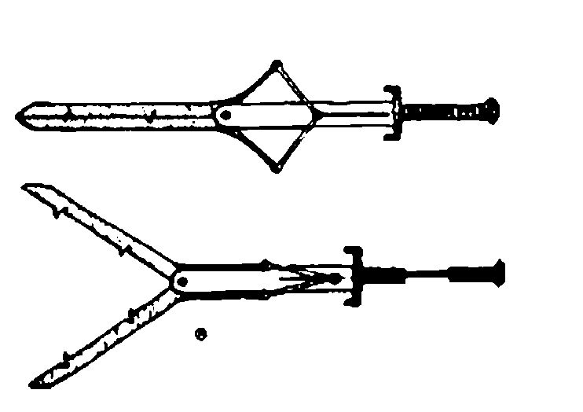
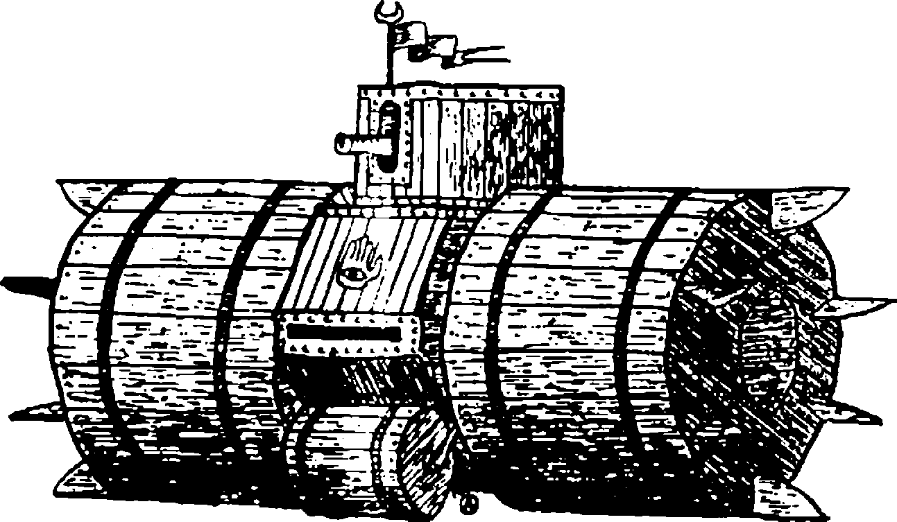
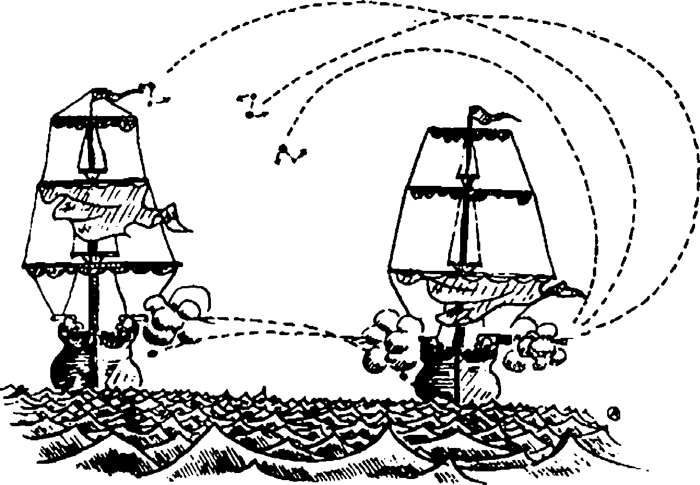
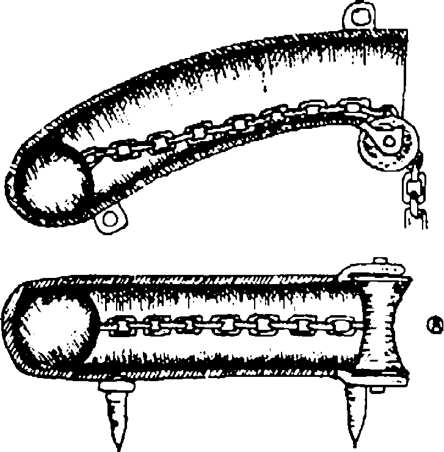
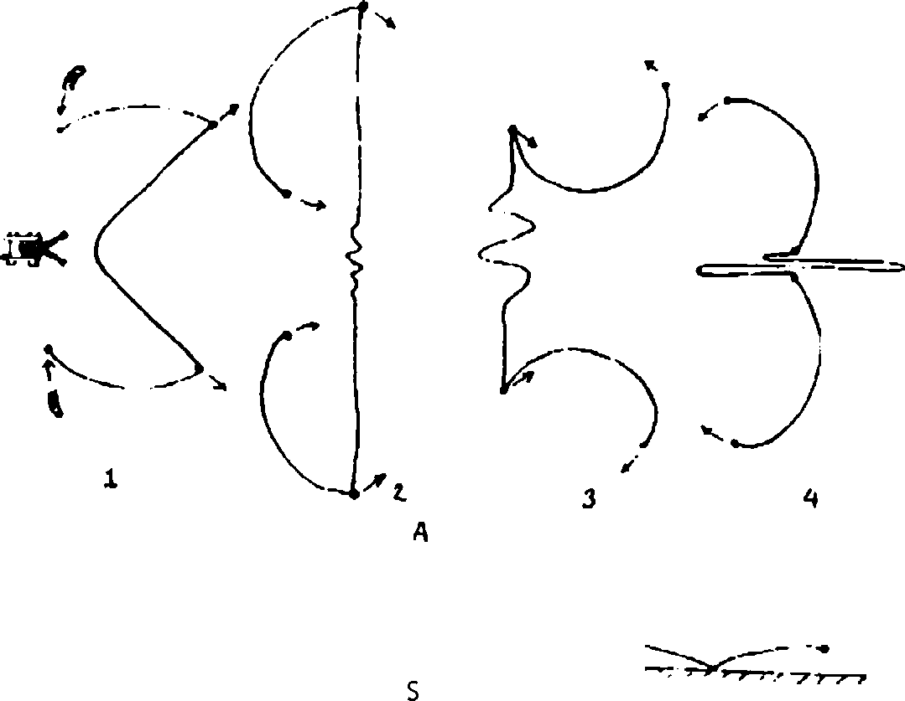
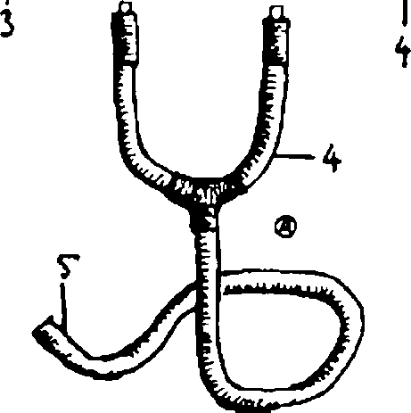
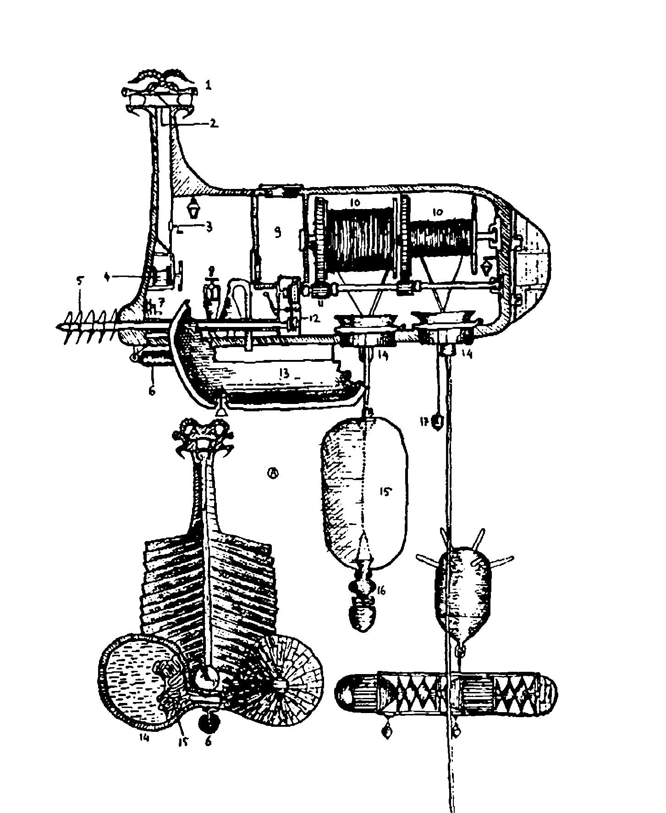
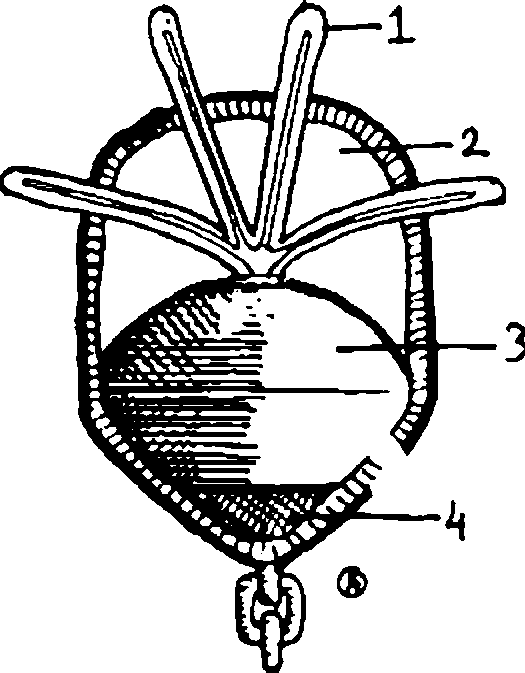

IHSAN OKTAY ANAR
Kitab-ül Hiyel
Eski zaman mucitlerinin
İnanılmaz Hayat Öyküleri
İHSAN OKTAY ANAR 1960 doğumlu. Lisans, master ve doktora eğitimini Ege Üniversitesi Felsefe Bölümü'nde yaptı. Halen aynı okulda öğretim üyesi. Yayımlanmış üç kitabı var: Puslu Kıtalar Atlası (1995), Kitab-ül Hiyel (1996), Efrâsiyâb'ın Hikayeleri (1998).
İletişim Yayınlan 357 • Çağdaş Türkçe Edebiyat 42
ISBN 975-470-542-9
© 1996 iletişim Yayıncılık A. Ş.
"And olsun ki biz, Davud'a katımızda bir imtiyaz verdik, 'Ey dağlar! Onunla birlikte teşbih edin' dedik. Kuşlara da bunu duyurduk. Ona demiri yumuşak kıldık".
Kur'an, xxxıv, 10
"Ve Saul kendi esvabını Davud'a giydirdi, ve başına tunç başlık koydu, ve ona zırh giydirdi. Ve Davud esvabı üzerine kılıç kuşandı, ve yürümeye çalıştı, çünkü alışmamıştı. Ve Davud Saul'a dedi: Bunlarla yürüyemem; çünkü alışmadım. Ve Davud onları üzerinden çıkardı".
I. Samuel, 37-39
YÂFES ÇELEBİ HAZRETLERİNİN GÖRÜLEBİLEN MENKIBELERİNDEN
BAZILARININ BİLDİRİLMESİ HAKKINDADIR
Kuledibi'ndeki Tamburlu kıraathanenin, çoğunlukla ariflerden, güngörmüşlerden, sohbet ve kelâm ehillerinden olan ahalisi, asırların tüketemediği bu yorgun dünyanın binbir halini yadedip onda baki kalan hoş ve nâhoş sedalardan dem vururken, laf dönüp dolaşıp çoğu kez bir zamanların Yâfes Çelebi'sine gelirdi. Râviyân-ı ahbar ve nâkilan-ı âsâr kâh hayretü minnet, kâh nefretü ibretle şunları rivayet ve hikâyet ederlerdi:
Yâfes nam bu çelebi Tophaneli idi, bedesten esnafları onun Saraçhaneli olduğunu, mahlasının da Seyfi olduğunu nice sonra tellallarla ilan ve defterlerde beyan etmişlerse de sonuçta taşralı değil İstanbullu idi. Kazasker'deki demirciler çarşısında, Sultan Abdülaziz devri saltanatlarında bile onun adını hatırlayan ustalar çıkmıştı. Fakat hatırladıkları, çehrelerine öfkeden kan hücum etmesinden belli olur, o anda kendilerine yüz kuruş bile verilse meşum saydıkları o ismi ağızlarına almazlardı. Bu öfkenin sebeplerine dair rivayetler muhteliftir. Kılınç dövme sanatında asrının piri kabul edilen Hacıkadınlı merhum Deli Bekir'den ikinci kalfası Kul Rıza'nın naklettiğine göre Yâfes Çelebi, daha ter bıyıklı, ayva tüylü, paluze tenli bir delikanlı iken kılınç dövme sanatına heves etmiş ve bunun için demirciler çarşısında Zekeriya Ustanın elini öptükten sonra çıraklığa kabul edilmişti.

Örsü, çekici ve körüğü usûl vuran bir kudümcü gibi kullanmayı, kızgın demiri bir kadın gibi tavına getirmeyi, kılınç yumurtasını döverken efsunlu şarkıları uygun makamla okumayı, çeliğe öküz idrarında çifte su vermeyi ve kılıncı tizapla parlatmayı orada öğrendi. Mahareti kısa zamanda o kadar arttı ki, onun yaptığı bir yatağanı kullanan otuz ikinci orta çorbacısı gazada hasmına hamaylı çekince, yani adamı sağ omuzundan belinin soluna kadar ikiye bölünce, gelip bu muhteşem silahı döven ustanın elini öpmek istedi. Fakat karşısına, Zülfikâr'ın sırrına vakıf ak sakallı bir pîr yerine, çıka çıka ayva tüylü bir cıvan çıktı. Sükûtu hayale uğrayan yeniçeri, yastıklı bıyıklarım burduktan sonra ona kesesinden tam kırkbir akçe bahşiş ihsan etti. Olay tez zamanda duyulunca, istikbal vaadeden bu genci esnaf şeyhi görmek istedi. Delikanlı ustasıyla gidip bu yaşlı adamın elini öptükten üç gün sonra, yiğitler, kethüdalar ve bizzat şeyh huzurunda gülbankı Allah Allah çekilip peştemalı beline bağlandı, gediği bağışlandı, esnaf sandığından akçesi verilerek dükkânı açıldı. Gel gör ki ne olduysa bundan sonra oldu.
Yâfes Çelebi'nin dükkânından önce semaî, ardından sofyan, ve nihayet aksak usulde çekiç sesleri duyuldu.
Aradan böylece tam bir hafta geçtikten sonra, hem de bir mübarek ramazan günü, çarşının ustaları, kalfaları, ayakçıları ve hadsiz hesapsız amelesi, tam da orucun başlarına vurduğu iftar öncesi saatlerde Yâfes Çelebi'nin dükkânına tuhaf bir kılıcın asılmış olduğunu gördüler. Birdenbire hepsinin gözleri dönüverdi.
Çünkü erbabı, makası andıran bu tuhaf kılıncın nasıl kullanılacağını hemen anlamıştı. İki elle kavranan bu silahın kabzası çekildiğinde namlusu tıpkı bir makas gibi ikiye ayrılıyor, hamle yapan rakip kılına bu sayede karşılamakla kalmıyor, kabza itilir itilmez kapanan namludaki kancalar sayesinde onu yakalıyordu da. Böylece zaptedilen rakip silahı kırmak ya da hasmın elinden düşürmek için, kılıncı ekseni etrafında çevirmek yetiyordu. Bu kepazeliği gören esnafın cinleri tepesine üşüşmüştü. Hele hele, onların sert tepkilerine önceden hazırlık yaptığından mıdır, Yâfes Çelebi'nin gürültüye pabuç bırakmadığını, dikkafalılık edip yine bildiğini okuduğunu gördüklerinde küplere bindiler. İçlerinden biri koşup durumu hemen şeyhe bildirdi. O sırada hamamda olan şeyh, kethüda ve yiğitbaşlarını da yanına alıp çarşıya geldiğinde, kılıncı görür görmez yere yığılıverdi. Adamcağızın sol yanına inme inmişti. Ağız dalaşı bu nedenle arttıkça arttı. Bir peykeye yatırılan şeyh ona, ahrette iki elinin yakasında olacağını söylüyordu. Neden sonra ondan yanına yaklaşmasını istedi. Yâfes Çelebi kendisine emredileni yapar yapmaz, yattığı yerden şeyh, geleneksel usûlleri bırakarak bu mertlikle bağdaşmaz kılıncı er meydanına sokan kalleş ustanın suratına okkalı bir tokat patlatıp gediğini iptal etti. Örf ve âdetlere karşı gelip zanaate bid'at getiren Yâfes Çelebi'nin peştemali belinden böylece çözüldü.
Fener'deki Sümbüllü meyhanenin müdavimlerinden ayyaş bir zat ise, lodosçular kethüdası Tavukpazarlı Koca Asım Paşazade Turşucu Hüseyin Efendi'nin kankardeşi merhum Gelenbevî Salim Efendi'den başka bir rivayet nakletmiştir:
Mezkur batakhanede, bu zatın beyanına göre Yâfes Çelebi, esnaf şeyhine inme inmesine sebep olmamış, ama ustası Zekeriya Efendi tarafından şu sözlerle azarlanmıştı:
"Diğerleri senin yeteneğini görüp korktular. Çünkü gediğin elinden alınmasaydı onların bu ticareti yürütmeleri zor olacaktı. Yaptığın kılınç onların bütün müşterilerini ellerinden alır, üstelik bunun arkası da gelir. Ama ben bambaşka bir sebepten onların kararına katılıyorum: Ustaların kılınç yapmak için saatlerce ve günlerce dövdükleri demir neden serttir, bilir misin? O, insanoğluna hemen boyun eğmez, çünkü onların, kendisiyle işleyecekleri suçları bilir. Bu yüzden de ortak olacağı günahların bedelini ateşte dövülürken peşinen öder. Zalimlerin kolları kendi erişilmez isteklerine göre çok kısadır. Tutkularının büyüklüğü onları böylece sakat kıldığından, bizim kılınç dediğimiz koltuk değneğini kullanırlar. İcad ettiğin silah işte onların tutkularını büyütecek ve zulümlerini arttıracak. Sen onların kollarını uzattın. Oysa kılınçlar yeterince uzun değil miydi?"
Sabık ustasının gönlünden koparıp ona verdiği tam yetmişüç akçeyle Yâfes Çelebi'nin, Galata'da bir süre avarice sürttüğü, meyhanelerde yatıp külhanlarda uyandığı, kalyoncularla yiyip kopuklarla içtiği, ancak bu arada nasıl olduysa kapağı açılınca çalışan, demirden bir müzik kutusunun planlarını da çizdiği rivayet-i mevsukadandır. Yeraltından çıkan madenleri bir yolunu bularak yumuşatıp, onlara gayrı tabii şekiller vererek kılınç, top, tüfenk adı altında satma hayallerinin, hayatındaki bu karanlık devirde onun zifiri külhan gecelerinin biricik süsü olduğu, ta Sultan Reşad devrine kadar kıraathanelerde söylenegelmişti. Aklı fikri, akıllara durgunluk veren tasarılarını gerçekleştirmekteydi. Ancak, bir vatansever olduğunu ve amacının da padişaha yepyeni bir tebaa kazandırmaktan öteye gitmediğini söylüyordu. Dediğine göre bu tebaa, makinelerin tâ kendisiydi.
Günün birinde, Tatavlalı divanelerle bahse tutuşmuş ve onlara, padişahın huzuruna gün gelip sol elinde bir demir külçesi ve sağ elinde de planlarını güçbela çizdiği demirden müzik kutusuyla çıkacağını anlatmıştı. Eğer kısmet olur da bu gerçekleşirse, zât-ı şahanelerine, bu nesnelerin her ikisinin de tabiatın bağrından kopartılmış birer demir parçası olduğunu, gel gör ki sol elindeki külçe insanoğlundan gelen her emre kayıtsız kalırken sağ elindekinin kendisine verilen emre uyduğunu, yani güzel bir nağme çaldığını söyleyecekti. Çünkü o bir makine, yani tabiatın esir edilmiş bir parçasıydı. Frenklerin mekanik diye adlandırdıkları hiyel ilmi de, tabiata emretmenin yegane yoluydu. Müzik kutusu haline soktuğu demir külçesine böylece şarkı söylemesini emreden hiyelci ise, elbette padişahın sadık bir bendesi olarak, gerçek bir büyücüydü. Kısacası hiyel ilmi, emirlere asla karşı gelmeyecek sadık köleleri, yani makineleri yaratma sanatıydı. Makineleri çalıştıran yedi tabiat kuvveti, hiç şüphesiz ki hiyel ilmi sayesinde insanların kudreti ve iktidarı olacaktı. Bu sözleri işiten Tatavlalı divaneler ağaçlara tüneyen kargalarla birlikte Yâfes Çelebi'ye kahkahalarla gülerlerken, içlerinden biri ona Deli Metrî adında bir feylesofun kitabını okumasını tavsiye etti. Madrabazlar da divanelerin tavsiye ettiği bu kitabı bulup onun esrannı çözmeye çalışan bu düşküne el-Cezerî'ye ait olduğunu ileri sürdükleri ve anlaşılmaz makine çizimleriyle dolu bir hiyel kitabını onbeş akçeye yutturdular. Vicdan sahipleri ise meyhanede onu, kucağında Ahmed bin Musa'ya ait bir hiyel kitabı olduğu halde sızmış durumda gördüklerinde yürekleri cız etti ve yirmibir akçeyi başlarının gözlerinin sadakası olarak kuşağına sıkıştırdılar. Ama o, bir külhanda ayılır ayılmaz bu parayı nereye sarfedeceğini gayet iyi biliyordu. Akçelerin onunu, Frenkçede "ilmi hiyel" demek olan Mekhanika adlı bir kitaba, geri kalanını ise bir okka rakı ile gerekli mezelere yatırmıştı.
Ona az buçuk yardımı dokunmuş vicdan sahiplerinden Yorgancı Mikail Efendi'nin vaktiyle rivayet ettiğine göre Yâfes Çelebi, onbir akçe saydığı rakıyı akşama doğru yarıladığında meyhane demkeşlerle yavaş yavaş dolmaya başlamıştı. Bunların içinde dört Nizam-ı Cedid neferi de vardı ki, yaptıkları iş, yani yeniçerilerin uğrak yeri olan bir meyhaneye gelmeleri akıl alır gibi değildi. Üstelik onbirinci ortanın içeri girmesi an meselesiydi. Çünkü bilindiği gibi, o devirlerde yeniçeriler ile talimli askerler birbirlerinin can düşmanıydılar. Çok geçmeden beklenen oldu ve bellerinde çifte piştov, çifte yatağanla; yüzlerinden pislik, ellerinden kan, ağızlarından küfür akan yeniçeri güruhu içeri girdi. Talimlileri farkedince şaşırdılar, ama onların ateşli silahları olmadığını görünce hemen hepsi haince sırıttı. Başeskinin bir işaretiyle adamlardan biri kapıyı tuttu. Anlaşılan, talimli neferlerle kedi fareyle oynar gibi oynamak istiyorlardı. Kerevetlere çöküp rakılarını getirttiler. Böylece demlenirken bir yandan da efendimiz Sultan Selim-i Salis Han Hazretlerine olmadık küfürler ediyor ve onun kurduğu Nizam-ı Cedid'in tüm neferlerinin mebun olduğunu söylüyorlardı. Talimliler ise cevap vermeye cesaret edemiyor, hatta adamakıllı yıldıklarından mıdır, ara sıra tasdik edercesine başlarını sallıyorlardı. Ama bu tavırları para etmedi. Rakıyla şarabı karıştırıp içtiği için gazaba gelen bir yeniçeri piştovunu çekti, üstelik horozunu kaldırıp tetiği istiğnaya bile aldıktan sonra, silahı talimlilerden birinin kafasına dayadı ve ondan, bir mebun olduğunu, gerekirse buradaki herkese verebileceğini söylemesini istedi. Beti benzi atan zavallı ise son çare olarak yatağanına davrandıysa da yeniçeri tetiğe asılır asılmaz kanlar içinde yere yığılıverdi. Gürültüyü seven katil, piştovuna barut hakkının iki mislini koyup namluya birkaç kurşun üstüste yerleştirdiğinden, adamcağızın kafasından eser kalmamış gibiydi. Ortalığın kan gölüne döndüğünü ve duvara et parçalarının yapıştığını görenlerin oracıkta içi kalktı, kan kırmızı misket, Bozcaada ve Ankona şarapları içenler başta olmak üzere pek çok kişi birer ikişer kusmaya başladı. Gözü dönmüş yeniçeri ise gâvur talimi yapanların sonunun bu olduğunu haykırıyor, tebaa-yı şahanenin kâfirlerden öğrenecek ilimleri olmadığını söylüyordu. Bu sözlerine meyhane ahalisinin pek o kadar inanmadığını içkili kafasıyla artık her nasılsa sezdiğinden, bir masada oturan üç Frenge dönüp bağırdı ve onlardan kendisini arzu ettikleri konuda imtihan etmelerini istedi. Beti benzikül kesilen iki Frengin tersine üçüncüleri, bozuk bir lisanlakatile, üçgenlerin iç açıları toplamının ne kadar olduğunu sordu. Gelgelelim bu sorunun muhatabı, meseleyi pek kavramış gibi değildi. Dörtyüz kuruş rüşvet verip marangozluktan yeniçeri ocağına geçen ilim irfan sahibi bir arkadaşı ona bu yüzden yardım etti: Parmağını talimli neferin kanına bandırıp yere birkaç üçgen çizerek adama üçgenin ve açının ne olduğunu kendi kafasınca göstermeye çalıştı. Ancak katil zihnini toparlamayı yine de başaramıyordu. Alt dudağı sarkmış, gözleri boşluğa bakar olmuştu. Sağı solu kolluyor ve kendisine cevabı fısıldayacak birinin çıkmasını bekliyordu. İşte tam da bu sırada Yâfes Çelebi'nin fısıltısını işitti. Ardından, mağrur bir sesle Frenge, "Bütün üçgenlerin iç açıları toplamı eşittir, yani yüz seksen ... şeydir, parmaktır" dedi. Frenk cevabı kabul eder etmez yeniçeri, "Şimdi aldı mı herkes ağzının payını! Bizim küffardan öğrenecek bir şeyimiz yok!" diye bas bas bağırdı ve cevabı kendisine fısıldayan Yâfes Çelebi'yi masasına çağırıp ona yarım okka rakı söyledi.
Sağ garipler devecisi Dörtboynuz Halil Efendi'den nakledildiğine göre, talimli neferi katleden onbirinci orta başeskisi Deli Abuzer Beşe, yevmiyesinin onda üçünün bahşişi daimi olarak kendisine verilmesi şartıyla Yâfes Çelebi'yi Tophane'nin Tersane Eminliği'ne bağlı olan kısmına dökümcü kalfası olarak aldırmıştı. Fakat rihtegânbaşı Abaza İsmail Dede'den, onun aklının fikrinin Mühendishane-I Bahrî'ye girip hiyel ilmini öğrenmekte olduğunu naklederler ki, doğrudur. Hakikat odur ki, Yâfes Çelebi, güllesi yerde defalarca sekip süvariyi telef eden moskof toplarının yapımına nezaret eden Frenk mühendisin gözüne girmeyi başarmıştı. Emrindeki adamlann yetenekleri ölçüsünde başarılı olacağını ve padişah tarafından bu nispetle ödüllendirileceğini bilen Frenk de onbeş kuruş maaşla mühendishaneye girmesine önayak oldu. Tarihler Yâfes Çelebi'nin diğer talebeler kadar başarılı olamadığım kaydederler. Belki de akranları devlet ricalinin ve zadegânın yakınları olduğu için bu böyleydi. Ne olursa olsun, trigonometriyi, cebiri, yelken ve denge hesaplarını, balistiğin esaslarını burada öğrendi.
Bir ara tüm varlığını, barut ve diğer patlayıcı maddelerin formüllerini incelemeye adadı. Bu iş için hamisi olan Frengin laboratuvannı kullanıyor, ama elbette içeride deneyler yapacağını değil, sağı solu silip süpüreceğini, imbikleri ovup tüpleri parlatacağını, fareleri teker teker telef edeceğini söylüyordu. Onun bu faaliyetleri konusunda rivayet muhteliftir. Kimileri suda patlayan maddeyi bizzat onun bulduğunu, kimileri ise sözkonusu maddenin Cezerî'ye ait kayıp bir hiyel kitabında uzun uzun anlatıldığını, Yâfes Çelebi'nin de koruyucusu Deli Abuzer Beşe'nin nüfuzunu kullanarak bu kitabı zavallı bir sahaftan onaltı akçeye aldığını söyler. Daha sonra bazıları da, mesela Sultan Abdülhamid Han devri saltanatlarında Hendek sokağında eczacılık yapmış olan Avram Efendi, su değer değmez patlayan bu maddenin bildiğimiz budasyom olduğunu söyleyecektir. Hakikat ne olursa olsun, mühendislik açısından son derece değerli olan bu madde onun elindeydi. Suyla temas eder etmez patlayıverdiği için, böylece toplar artık belki de suyla ateşlenecekti. Gelgelelim Yâfes Çelebi çalışmalarına kendisini o kadar kaptırmıştı ki, onun laboratuvarda temizlik bahanesiyle uzun saatler geçirmesinden huylanan Frengin kendisini gözetlemeye başladığını farkedemedi.
Gerçekten de o, bodasayı bir volta pili yardımıyla suda çözdüğü sırada kapıyı aralayıp içeriye bakan Frenk, Yâfes Çelebi'nin sözkonusu maddeden ufak bir parçayı suya attığını ve parçanın da suyun sathında patlaya patlaya sıçradığını görünce küçük dilini yuttu. Hemen delikanlının yakasına yapışıp ondan bu maddenin sırrını kendisine vermesini, yoksa ölümlerden ölüm, cellatlardan cellat beğenmesini söyledi. Yâfes Çelebi ondan düşünmek için tam üç gün süre kopardı ve sonunda gün gelip çatınca, Sultan Selim-i Salis Han Efendimiz tarafından Frenge giydirilen zerduva kürkün beher cebine birer kese barut koydu. Keselerin ağzına, ıslanmasın diye balmumuna batırılmış fitil takıp, fitillerin ucuna da suda patlayıveren maddeden yerleştirdi. Nihayet Frenk gelir gelmez ona, "Ey efendim, hoşgeldiniz! Sırrımı size söylemeye karar verdim. Ama zahmet buyurursanız meyhaneye gidelim de şarabımızı yudumlarken konuşalım. Çünkü bu pek hoş, pek keyif verici bir konudur!" dedi. Frenk de, "Gidelim gitmesine de, havaya baksana. Bu yağmurlu havada Galata'ya kadar nasıl gideceğiz? Hem senin atın da yok," diye cevap verdi. Yâfes Çelebi ise, "Efendimiz! Siz atınıza atlar dört nala gidersiniz, ben de tabana kuvvet koşarım ve nasıl olsa size er ya da geç yetişirim" dedi. Bunu duyan Frengin içi ferahladı ve kürkünü giyip atına atladı. Şiddetli yağmur altında, Kasımpaşa'dan Galata'ya doğru beher cebinde birer kese barutla dört nala at koştururken, fitillerin ucundaki madde suyla temasa gelip ateş aldı ve fitiller yanmaya başladı. Daha Meyyit kapısına gelmeden, atının üzerinde olduğu halde kâfir böylece infilak etti. Sayısız parçası evlerin kapılarına ve kafeslerine, mezar taşlarına ve daha nice bin nesneye yapışıverdi. Ne var ki bu, Yâfes Çelebi Hazretlerinin mühendishanede artık hiçbir koruyucusu kalmadığı anlamına da geliyordu. Françe kralını deviren ihtilalcilerin gönderdiği gerçek bir Yakubî olan bu Frenkten arta kalanlar defnedildikten sonra, bu hiyel ve hiyle meraklısı, derslerinde başarısızlığı âdet edindiği ileri sürülerek çok geçmeden mühendishaneden atıldı. Ondan boşalan yere ise, Cenabet Haydar Paşa'nın yeğeni Lâlezar Fülfül Çelebi alındı.
YÂFES ÇELEBİ'NİN DEBBÂBESİ DEBBÂBENİN İÇİ 
Tatavla'daki divane taifesi eşrafından Zilkeş Basri Efendi'den nakledildiğine göre , mühendishaneden atıldıktan sonra Kasımpaşa, Galata ve Tophane civarında parasız pulsuz dolaşan Yâfes Çelebi, hayatının bu diğer karanlık devrinde de boş durmamış, iki üç kâğıt parçasına bir debbâbe çizip yine olmadık hayaller kurmaya başlamıştı.
Bilindiği gibi debbâbe denilen savaş aracı, pek basit olarak, askerlerin, içine girip güçlü adımlarla sürdükleri dev bir fıçıdan ibaretti.
Düşman metrislerinden açılan ateş, kalın tahta kaplamalar sayesinde bu fıçının içindeki askerleri korur, böylece ta metrislere kadar selametle yaklaşmak mümkün olurdu. Fakat debbâbenin içinden dışarısını görmek mümkün olmadığından, askerlerin yön saptaması kolay olmazdı.
Zaten yön tayin edilse bile, bu aleti sağa ya da sola döndürmek dünyanın en zor işi sayılırdı. İşte Yâfes Çelebi bütün bu müşkülleri ortadan kaldırmış, bilinenden epeyce farklı bir debbâbe geliştirmişti. Bununla da kalmamış, ayrıca ona bir de atış gücü kazandırmıştı. Çok basit olarak bu araç, bir dingille birleştirilmiş yanyana iki fıçıdan ibaretti, ve tahmin edildiği gibi fıçılara onar, onbeşer asker girip içeriden onları sürüyordu. Tam ortada ise büyük bir sandık vardı. Buradaki dört tüfenkçi ise, ikisi önde ikisi arkada olmak üzere debbâbeyi koruyorlardı. Ayrıca sandığın üzerindeki döner kulede bir topçu bulunuyor ve bu zat da tam üç kez atış şansına sahip olduğundan, araç yürürken dahi ilerlenen hedefi tehdit edebiliyordu. Sözkonusu top üç namlulu ve yekpareydi. Önceden dolduruluyor ve böylece zaman kaybetmeksizin peş peşe ateşlenebiliyordu. Yön değiştirmek ise son derece kolaydı. Araç, diyelim ki eğer sağa dönecekse , sağ fıçıdaki adamlar duruyor ya da bulundukları fıçıyı geriye sürmeye başlıyorlar, böylece sol fıçı ilerlediği için debbâbe sağa doğru bir daire çiziyordu. İş bununla da kalmıyordu. Çünkü bu araç denizde de ilerleyebiliyordu. Gemiden vinçle denize indirilen yirmi kadar debbâbe, top ve tüfenk ateşiyle kıyıdaki metrislere rahatça yaklaşabilir ve taşıdığı askerleri sahile kolayca çıkarabilirdi. Sözün kısası, bu aracın faydaları saymakla bitmez, tükenmezdi.
Râviyân-ı ahbar ve nâkilan-ı âsâr, Yâfes Çelebi'nin bu akılalmaz tasarıları Zencefil Çelebi adında bir zata anlattığını rivayet ederler ki, Katırcı Salim Ağanın kullar defterine düştüğü kayıt bunu doğrulamıştır.
Ahırkapı delilerinden Çapraz Beşir Efendi'den nakledildiğine göre, Zencefil Çelebi'nin aşkı o günlerde dillere destan olmuştu. Ayasofyalı bir efendinin oğlu olan bu zat, yüzünü hiç görmediği, ama hamam kocakarılarından duyduğu kadarıyla, elâ gözlü, kiraz dudaklı, kirpikleri ok, kaşları yay, memeleri turunç ve ten ibillur bir dilbere evsafını işitir işitmez âşık olmuştu. Böylece yemeden içmeden kesildi. Bu halini gören kocakarılar da hamam dönüşlerinde kapısını çalarak onu düşlerinden uyandırıyorlar, kafesin ardından buğulu gözlerle kendilerini süzen delikanlıya, "Senin dilberi hamamda gördüm yine! Ah! Bir görsen. Dudaklar kiraz! Memeler turunç! Uçlarındaki tomurcuklara nar çiçeği mi desem, kır çiçeği mi! O kirazları, o turunçları bir ısırsan, bir dişleşen, bak şuracığa yazıyorum, kör olayım dizlerinin bağı çözülür!" diye sokak ortasında bağırıyorlar ve zavallıyı böylece doldurup derdine dert katıyorlardı. Bütün bunların kaçınılmaz bir sonucu olarak Zencefil Çelebi süzüldükçe süzüldü. Zavallının ince hastalığa yakalanacağından korkan babası da kızı istemeye karar verdi. Bu erişilmez sevgili iki mahalle ötede oturuyordu. Kocakarılar aracılığıyla elâ gözlü dilberin ailesine haber salındı ve bir mübarek cuma günü Çelebi ile babası, mahalle imamı ve eşraftan hatırı sayılır birkaç zatı da yanlarına alarak görücüye çıktılar. Gel gör ki kızın babası pek aksi, pek katı kalpli biriydi. Evladını vermeyi kabul ediyor ama padişahlara layık, kırk gün kırk gece sürecek bir de düğün istiyordu. Ailesinin geniş olduğunu ve bu yüzden de düğüne asgari yüzyirmi kişinin misafir edileceğini, altı kişiye günde bir kuzu ve on kişiye de bir kazan pilav hesabından dokuzyüz başlık sürü ve iki kalyon yükü pirincin bedelinin oğlan tarafından ödenmesini şart koşuyor, üstelik buna, çoğu taşralı olan misafirleri barındırma giderlerini de ekliyordu. Ayrıca kızını hacı olmayan bir damada vermeye de niyetli değildi. Gözler önünde mum gibi eriyip giden oğlunu kaybetmek istemeyen baba, çaresiz bu şartları kabul etti.
Söz kesildikten sonra iki evinden birini satıp oğlunu hacca gönderdi. Zencefil Çelebi dönüşte Şam'da kalacak ve düğün parası birikene kadar kumaş ticareti yapacaktı. Nihayet delikanlı surre alayıyla yola çıktı ve sekiz ay sonra onun Şam'dan yolladığı ilk kumaşlar geldi. Böylece aradan tam üç yıl geçti. Düğün için yeterince meblağ birikmiş ve onun artık yurduna dönmesi için hiçbir engel kalmamıştı. İstanbul'a gelir gelmez ilk işi, gönderdiği kumaşları satan babasının bir sandıkta biriktirdiği altınları saymak oldu. Para, düğün masraflarını ucu ucuna karşılayacak gibiydi. Belki de bu yüzden, içindeki endişeyi biraz olsun bastırmak maksadıyla Galata'da bir meyhanede dinlenmek gafletinde bulundu. Yâfes Çelebi'yle işte burada tanıştı. Acıdığı için şarabına ortak ettiği bu adam, gerçekleştirildiği takdirde padişahın çuvallar dolusu altın ihsan edeceği korkunç bir muharebe aracı tasarladığını söylüyordu. Üç namlulu topu dökmek yüzelli altına, kereste, demir ve işçi-usta yevmiyeleri de doksanbeş altına bakıyordu. Fakat yekûnu ikiyüz altını biraz aşan bu masrafların, hem elli katı parayı hem de Paşa Kapısı yahut belki de sarayda iyi bir mevkiyi getireceği apaçıktı.
Yâfes Çelebi zavallının ağzından girdi, burnundan çıktı ve sonunda onu razı eder gibi oldu. Ertesi gün ise içi ikiyüz altınla dolu bir çekmece elindeydi. Fakat bu hazine hemen geri istenebilirdi. İşte böylesi bir hisle, ortağının cayacağından korktuğu için hemen işe koyuldu.
Tophane semtinde bir marangozla anlaştı. Azapkapı'dan yeterince kereste alındıktan sonra, debbâbenin madeni akşamı demircilere sipariş edildi. Üç namlulu topun dökümü ise Haseki Hamamı civarındaki bir dökümcüde yapılacaktı. Bu iş için Kâğıthane kili, dokuzyüz yumurtanın akıyla karıştırılıp bir tür balçık hazırlandı. Topun kalıbı bu balçıktan yapılır yapılmaz bakırın eritileceği fırın yakıldı. Ateş bir gün bir gece aralıksız beslendikten sonra bakır erimişti. Böylece kıvama gelen madenin içine yeterince kalay ve uğur getirmesi için de bir hacı altını atıldı. Fırının ağzı açılarak tunç deryasının akması ve kalıba dolması sağlandıktan sonra, donması için üç gün üç gece beklendi. Nihayet kalıp kırıldığında üç namlulu pırıl pırıl bir top ortaya çıktı. Fakat namlulardan birinde uzun bir damar göze çarpıyordu, bu da ateşlenir ateşlenmez topun yarılacağının, dolayısıyla döküm işinin pek o kadar başarılı olmadığının alametiydi. Dökümcü bu hatadan, ikide bir işine karışan ve kendisine ayak bağı olan Yâfes Çelebi'yi sorumlu tutuyor, beriki ise onu, bakırın kalayla yeterince karışmamasına sebebiyet vermekle itham ediyordu. Nihayet kabak Zencefil Çelebi'nin kafasında patladı ve yeni bir döküm işine girişmesi için yüzotuzyed I kuruşa zorla razı edilen dökümcüye bu miktarı ödemek zorunda kaldı. Paraları tükendiğinden artık hiçbir hata yapmamaları gerekiyordu. Bu yüzden bir üfürükçü tutuldu, tuncun kıvama gelmesini engelleyen bütün büyüler ve nazarlar bu adam sayesinde defedildikten sonra, erimiş maden kalıba döküldü. Soğuduktan sonra kalıp kırıldığında namlulardan birinin diğerlerinden kısa olduğu görüldü.
Aksilikler bununla da kalmadı. Marangozların hazırladığı iki fıçının boyu birbirini tutmuyordu. Kendilerine ne kadar dil döküldüyse de adamlar hatalarını kabul etmediler. Çünkü fıçıları yapan Bodur ve Deve lakaplı kalfalar ölçüleri kendi karışlarına göre almışlardı; her ikisi de fıçıların çapının ne eksik ne fazla, tam kırkyedişer karış olduğuna kalıplarını basıyorlardı. Böylece bu yanlış anlama da onlara tam yirmiiki altına maloldu. Aradan bir ay geçtikten sonra Zencefil Çelebi artık beş parasız biriydi ama Ordu-yu Hümayûn'u zaferden zafere koşturacak olan, üstelik bitmesine ramak kalmış bir debbâbenin yüzde elli hissesine sahip olmak onun endişelerini azaltıyordu. Nihayet, beklediği müjdeyi aldı: Uğrunda üçyüzelli altın harcadıkları araç tamamlanmıştı. Ayrıca Yâfes Çelebi, debbâbenin gücü ve imkânlarının gözler önüne serileceği bir gösterinin ayrıntılarını bile hazırlamıştı. Padişah efendimizin ve devlet ricalinin hazır bulunacağı bu gösteri Kâğıthane'de yapılacak, otuzbeş yiğidi taşıyan debbâbe, kös, kudüm, nekkâre ve çifte nara feryatları eşliğinde, gülbank çekilip dualarla suya inecek, dereyi geçerken bir yandan da topunu ateşleye ateşleye karşı kıyıdaki temsili palangaya hücum edecekti. Orayı yerle bir edip zaptettiğinde, fıçılardaki yiğitler meydana çıkıp palangadan geriye kalanları ateşe verecekler, bu esnada havai fişekler, çarkı felekler, maytaplar ateş alıp ortalığı bayram yerine çevirecekti. Bu muhteşem gösteriyi seyrederken gözleri yaşaran padişah efendimiz de, hem Zencefil Çelebi'yi hem de debbâbeyi yapan hiyel ustasını çağırıp elini öptürecek , onlara en âlâsından birer hilat giydirecekti. Bütün bunlar artık bir hayal değil, müstakbel bir hakikatin parçasıydı.
Her şey iyiydi hoştu ama, Katırcı Salim Ağa'mn naklettiğine göre, yarattığı endişe dışında bu debbâbenin hiçbir külfeti olmadığına inanan Zencefil Çelebi, olayı Babıâli aracılığıyla padişah efendimize duyurmak, savaş aracının ihtira beratını almak, ayrıca onun tüm imalat haklarını kendilerine veren ve bu iş için gerekli donanımı ve parayı sağlayan bir ferman koparmak görevinin kendisine yüklendiğini görünce mırın kırın etmişti. Bu görev onun olmalıydı, çünkü kendisi usul erkân bilen efendi bir zat olarak devlet ricali karşısında daha büyük bir şansa sahipti. Üstelik kendilerine, sözgelimi Nizam-ı Cedid hâzinesinden verilen faizsiz borçla yapacakları sayısız debbâbeyi böylece yine devlete satabilirlerdi. Ama bütün bunların gerçekleşmesi için önce ihtira beratının alınması şarttı. Yâfes Çelebi bütün bu bilgileri Françe sefaretinin ayyaş tercümanının ağzından almış, adama içirdiği şaraba da son meteliğini vermişti. Zencefil Çelebi'nin bu işe önce aklı basmadı. Ancak neden sonra ikna oldu ve senede muhtemelen onbin altınlık bir gelirden bahseden ortağına inanarak ertesi sabah onun talimatları uyarınca dosdoğru Babıâli'ye gitti. Beş akçe verip bir damgalı kâğıt aldı ve ortağının hazırladığı müsveddeyi, o güzelim, inci gibi yazısıyla temize çekip istidanın arkasına mührünü bastı. Devlet dairesine girer girmez onun mutlu hayatı artık bitmişti.
Çünkü içerideki kalem efendileri, cahiliye devri boyunca Kabe'de bekleyen putlar kadar kımıltısız ve kayıtsızdılar.
İstidasını bir mülazıma uzattığında, hayatını bir keşmekeşe dönüştürmek için son adımını atmıştı: Ricası dikkate alındı ve kendisinden bir hüccet istendi. Çünkü debbâbenin kendilerine ait olduğunu Galata kadısı huzurunda ve şahitler nezdinde ispatlamaları gerekiyordu. Yüz akçe harç yatırdıktan bir hafta sonra aldığı hücceti teslim ettiğinde evrakları mülazım tarafından şakirdlerine havale edildi. Adam başı onar akçeyle bu engel aşıldıktan sonra ikinci ve birinci halifelere erişilince bahşişin miktarı da yükseldi. Yollar tıkanınca Zencefil Çelebi, yaptığı işlere akıl sır erdiremeyen babasının yardımına başvurarak, komşu mahallede outran arslancıbaşıyla temas kurdu.
Padişah efendimize Magrip'ten gelen arslanların bakımından sorumlu olan bu saray görevlisinin evine, bir top tereyağı, bir sepet yumurta ve koltuğunun altında bembeyaz bir kazla gidip medet diledi. Bunun yararını hemen gördü. İki haftaya kalmadan evraklar daire kâtibine yükselmişti. Fakat, gönlünü kaptırdığı dilberin babası düğünün neden ertelendiğini sorup durmaya başlamıştı. Üstelik adamın hakkı var gibiydi, çünkü onaltı yaşını doldurmak üzere olan kızının evlilik çağını geride bırakmasına az bir zaman kalmıştı. Çelebi, bu yüzden elini daha çabuk tutmaya karar verdi ve kâtibin istediği kulluk akçesini karşılayabilmek için saatini sattı. Ne var ki evrakları bu kez de telhisçide takıldı. Bu zata emeği karşılığı ödenmesi gereken para bir türlü çıkışmıyordu, ayrıca o, yumurta, bal, tereyağı, ve kazla tatmin edilebilecek biri de değildi. Böylece bu zavallı tam bir ay boyunca kara kara düşündü. Oğluna haddinden fazla düşkün olan babası, zavallının eriyip bittiğini görünce bir akşam ona tam doksanyedi altın saydı. Adamcağız, asırlardır oturdukları, ve eşik taşı dedelerinin biri tarafından bir Ermeni büyücüsünün gölgesi üzerine devrildiği için tam yedi yangını salimen atlatan sihirli evlerini satmıştı. Altınların elliyedisi zahmeti için telhisçiye verildikten sonra nihayet sadrazama giden yol açılmış, ama aradan haftalar, aylar geç mişti. Her nedense tam da bu aşamada Yâfes Çelebi, kendi hissesini ortağına otuz altına satmaya razı oldu. Karakullukçu Hiram Efendi'den nakledildiğine göre, böyle kârlı bir işten vazgeçmesinin nedeni, o sıralar bir gemi topu üzerinde çalışmaya başlamış olmasıydı ki, daha sonraki tarihlerde bu, onun parada pulda gözü olmadığının bir delili sayılacaktı. Gel gör ki Zencefil Çelebi'nin paraya şiddetle ihtiyacı vardı. Ama zengin ve nüfuzlu biri olmasına ramak kalmıştı. Zenginlik hayalleri onu teskin etmesine rağmen, ihtira beratını almak için Babıâli'ye gittiğinde, endişeleri nüksetti: Sadrazam amed! kalemine bir yazı yazdırmış ve müneccim- başıdan bir zayice, yani evrakları okumak için eşref saati bildiren resmî bir yazı istemişti. Bu, devletin kaderini değiştirebilecek olan bir icad hakkında isabetli bir karar vermek için gösterilen bir titizlik olmalıydı. Ama mevsim, yağmur mevsimiydi ve hava kapalı olduğu için müneccimbaşı yıldızları uzun süre gözleyemediğmden zayiceyi üç hafta sonra gönderdi. Evrakların okunacağı eşref saat, bir sonraki ayın yirmibirine düşen cuma günüydü. Fakat cuma günleri tatil olduğundan müneccimbaşıdan bir zayice daha istendi. Sonunda iş uzadıkça uzadı ve nihayet sadrazam evrakları okuyup tarihçi kalemine gönderdi. Ne var ki tarihçi, sadrazamın verdiği karara tarih atmak için üç altın isliyordu. Zencefil Çelebi, artık sahip değiştirmiş olan evlerinin avlusundaki köhne barakada, mum ışığı altında gözyaşı dökerken babası içeri girip oğlunun eline üç altın sıkıştırdı. Adamcağız evi geçindirmek için tam bir buçuk aydır Ayasofya Camii avlusunda dileniyordu. Fakat oğlunun hâlâ umudu vardı. Ertesi sabah tarihçi kalemine giderek tezkiresini aldı. Evrakı okuyunca her şeyin bittiğini anlayıverdi: İstidası sadrazam tarafından, Bayezid'deki Hiyel Kalemi'nin reisi Uzun İhsan Efendi'ye havale edilmişti. Yorgun ve bitkin bir durumda mahallesine dönerken kocakarılar her nasılsa onu tanıdılar ve gönlünü kaptırdığı turunç memeli dilberin bir kabzımalla evlendirildiğini ağlaya sızlaya bildirdiler.
Ayasofyalı deliler taifesi arasında kendisinin Sultan Mahmud olduğunu iddia eden Ahırkapılı mecnun Zincirli Mah- mud'un güruhundan biri olup onun vakanüvisliğini yapan Divane Salim Efendi'den, Süleymaniye Tımarhanesi güllabicibaşısı Demirtokat Haydar Bey'in naklettiğine göre, Zencefil Çelebi divane taifesi arasında önce müjdecibaşılığa yükselmiş, daha sonra da vazifesini ifâsındaki muvaffakiyetine binaen reisül-küttab olmaya hak kazanmıştı. Ancak Zincirli Mahmud'un vefatım müteakip, onun yerine geçen Kasımpaşalı Mecid tarafından görevinden azledilerek malına mülküne, yani Tophane'de çürümeye terkedilen ve onun yıllardır içinde barındığı tuhaf bir debbâbeye el konulmuştu. Galata Kuledibi'ndeki Tamburlu kıraathanede, Sultan Abdül- hamid Han efendimizin devri saltanatlarında yaşı yetmişi bulanlar, Zencefil Çelebi'nin cinler âlemine göçmesinden çok daha önce vuku bulan bazı garip şeyleri sırası geldikçe anlatmaktaydılar ki, çoğu Yâfes Çelebi'nin akıl almaz işlerine dair olan bu rivayetlerde pek o kadar abartma payı yoktur. Bahis konusu garip işlerin döndüğü döneme, yani Sultan Selim-i Salis Han efendimizin saltanat günlerinde, Galata'daki hain ellerde dolaşan cinli şişelere dair Kahveci Aram Efendi'den nakledilen söylentilere göre, kendisine bir geçim kaynağı arayan Yâfes Çelebi, sonunda Leyden şişesi yapıp satmaya karar vermişti. Çeşmibülbülden yirmi kadar şişe alıp bunları bir kalay tabakasıyla kapladı. İçlerine üçer karışlık zincir koyup suyla doldurdu. Zincirin bir ucu şişenin ağzındaki demir çubuğa bağlıydı. Kükürdü eritip altı karış çapında bir küre yaparak bunun ekseninden bir mil geçirdi ve küreyi, onu kolayca döndürecek bir kasnağa monte etti. Ayağına tahta nalınlar giyerek, pedalla döndürülen küreye bir süre ellerini sürttü. Böylece onu, Frenk dilinde "elektrik" denen mucizevi güçle yükledi. Hazırladığı Leyden şişelerini işte bu küredeki elektrikle doldurdu. Öyle ki, şişenin ucundaki topuza dokunan derhal çarpılıyor, ağzı burnu yerinden oynuyordu. Kafasında binbir hesapla Yâfes Çelebi, hazırladığı yirmi şişeden birini yanına alarak doğruca Mihalaki'nin meyhanesine gitti. Çünkü kendisini tophaneye aldırdıktan sonra yevmiyesinden sürekli pay isteyen, işinden ayrıldıktan sonra bile peşini bırakmayıp iki günde bir haraç kopararak ona hayatı zindan eden yeniçeri Deli Abuzer Beşe, elbette ki her gece olduğu gibi yine oradaydı. İçeri girdikten sonra, küçük ve çipil gözleriyle vahşice bakan, bu palabıyıklı yeniçerinin karşısına oturdu ve şişeyi ona uzattı. Abuzer, "Behey civeleğim! Dayına Bozcaada şarabı mı getirdin? Hem ne biçim şişe bu abe teres!" diyerek bir eliyle şarap dolu olduğunu sandığı şişeyi kavradı. Şişenin ucundaki demir tapayı çıkarmak için diğer elini değdirir değdirmez çarpılıverdi. Yere yığılıveren bu dağ gibi adamın ağzı eğrilmiş, sağ gözü sağa sol gözü sola bakar olmuş, çenesi yana kaymıştı. Meyhanedeki herkes ayağa kalkmış, gözlerine inanmak için havsalalarını zorlamaya başlamışlardı. Yâfes Çelebi, halının üzerine düşen şişeyi alıp kaldırarak kalabalığa gösterdi: "Ey ahali! Bu şişenin içinde bir cin var. Bundan sonra bana hürmet edecek ve oğullarınıza torunlarınıza bayramlarda elimi öptürteceksiniz. Ayrıca beni 'çelebi' diye çağıracaksınız. Yoksa bir dilek dilerim ve şişedeki cin istediğim adamı çarpar" deyip acıdan çok şaşkınlıktan dolayı yerde kıvranan Abuzer'i gösterdi. Yeniçeri, salyasını sümüğünü tutamaz olmuş, kokulu fildişi tarakla her sabah özenle taradığı palabıyığı hamam lifi gibi dağılmıştı. Ahaliden bir kalyoncu Yâfes Çelebi'ye, "Ey merhametli ve hayırsever çelebi! Şişende böyle sadık bir cin olduktan sonra sana karada ve denizde ölüm yok. Ama zahmet buyur da söyle: Bu kudretli cine Deli Abuzer için ne diledin?" diye sordu. Yâfes Çelebi'nin verdiği cevap herkesi dehşet içinde bıraktı: Çünkü kırk güne kalmaz Deli Abuzer'in husyeleri, kamışı ve palabıyığı kuruyacak, adamcağız kadın oluvere- cekti. O gece ve diğer geceler meyhane sohbetlerinin baş konusu bu oldu. Sonraki günlerde demkeşlerin hemen hepsi, "Cin artık bir kez çarptı Abuzer Beşe'yi. Avrat olmasının eli kulağındadır" deyip, onun zıbık taktığını ve takma bıyıklarını güçlü bir zamkla dudağına yapıştırdığını ileri sürenlerin sözlerini sükûnetli karşılayacaklardı.
DÜŞAHİ VE PALANKETESİ
Böylece bu hiyelkâr artık hem "çelebi" diye anılmaya başladı hem de cinlerin ikamet ettikleri şişelere olan talep o dönemde fazla olduğundan, cebine birkaç kuruş para da girdi. Soranlara, sattığı şişelerdeki cinlerin, Abuzer'i çarpan Züverdâ adlı cinin zürriyeti olduğunu söylüyor, tıpkı insanlardaki gibi cinlerde de genç neslin itaatsiz, vurdumduymaz ve hayta olduğunu belirtip, dilekler gerçekleşmediği takdirde sorumluluk kabul etmeyeceğini ta baştan hatırlatıyordu. Cinler, şişe sahiplerinin emirlerine kulak asmayıp ısrarlarına boyun eğmeyince müşteriler iyice azaldı. Dünyada otuzuncu yıllarını yaşayan Yâfes Çelebi kesesindeki akçelerin tükendiğini ve Dersaadet piyasasının Leyden şişesine doyduğunu, yaşına başına daha uygun, saygın ve geliri iyi bir iş kurması gerektiğini düşündü.
DÜŞAHİNİN MERMİ YOLLARI
Bu kez ilham kaynağı başkaydı: Karaköy'de dolaşırken, kıyıya kıçtankara etmiş Frenk kalyonlarından birinin güvertesinde, ayyaş bir gemicinin kemanla tuhaf bir nağme çaldığını işitti. Gemiye doğru, "Behey kâfir. Döktürdüğün bu nağme ne iştir? Kimindir?' , diye bağırdı. Tarihçiler kâfirin ona, "Behey teres. Çaldığım bu nağme Russinî nam tıfıl bir bestekârındır, adı da Hırsız Safcsagan'dır" dediğini rivayet etmişlerdir. Bu keman nağmesinden ilham alan Yâfes Çelebi bütün gece gözünü kırpmadan düşündükten sonra sabah erkenden yola çıkıp kırlarda dolaşmaya başlamıştı. Amacı, saksağan yuvalarını bulmaktı. Bir hafta tarlada bayırda dolaştıktan sonra tam yediyüzseksenüç yuva tespit etmişti. Bütün gün şehrin üstünde uçan, ve parlak olan her nesneye büyük bir ilgi duyan bu kuşların yüksek ağaçlardaki yuvalarına tırmanıyor, saksağanları kışkışlayıp kaçırdıktan sonra da, hayvancağızın ömrü boyunca sağdan soldan çalıp, aşırıp, apartıp getirdiği renk renk boncuklar, deniz kabukları, camdan yapılmış takma gözler, devri saadetten kalma ok demirleri, sedef kakmalı minicik afyon kutuları, tüfenk kurşunları, cam parçalan, elmas taşlı yüzükler, kemikten yapılmış ufacık düğmeler, şişe mantarları, ortasında bir zümrütün parıldadığı broşlar, insan ve hayvan dişleri, bakır paralar, nazar boncukları, Sultan Süleyman zamanından
kalma altın sikkeler, sahte ve hakiki inciler, ayarı düşük akçeler arasından değerli olanları alıp bohçasına atıyordu. Hırsız saksağanlardan çaldığı altın ve gümüşleri sarraflara bozdurduktan sonra, elmaslar ve zümrütleri bedestendeki kuyumculara satıyor, böylece geçinip gidiyordu. Onun tasarladığı çift namlulu topların da bu refah döneminin ürünü olduğu rivayet edilecekti ki, o günlerde Babıâli'de koşturup duran Zencefil Çelebi'ye debbâbedeki payını otuz altın gibi az bir meblağa satması bunda gerçek payı olduğunu göstermekteydi. Debbâbenin artık köhnemiş bir tasarı olduğuna inanması, geceler boyunca türlü hesaplar yapıp planlarını çizdiği topların daha korkunç bir silah olduğunu düşünmesinden kaynaklanmaktaydı.

ZÜLKARNEYN VE PALANKETELERİ
zülkarneyn palanketesinin yan güllelerinin yuvaları
Divane Salim Efendi'nin naklettiğine göre o, bu toplardan ilkine düşahî adını vermişti. Bu top, gemilerde kullanılacaktı. O zamanın deniz savaşlarında, sancak ve iskelelerinde belli sayıda top bulunduran gemiler borda bordaya verir ve toplarını ateşlerlerdi. Böyle bir durumda da onların, ya santaklarındaki ya da iskelelerindeki topları, yani atış güçlerinin ancak yarısını kullanacakları açıktı. Fakat eğer onların topları düşahî olursa, atış güçlerinin tamamını kullanabilirlerdi. Çünkü bu top, isteğe ve amaca göre gülleleri hem düz hem de kavisli atabiliyor, böylece hem öndeki hem de arkadaki hedefleri vurabiliyordu.

ZÜLKARNEYN PALANKETESİNİN İZLEDİĞİ YOL
A) Yuvalardan fırlayan hafif gülleler namlulardan atılan ağır güllelerin etrafında dönerlerken zincirler böylece genis bir alanı tarar. B) Namlu açısı az olduğu için gülleler yerde defalarca seker.

ÇİFT NAMLULU TOPLARI ATEŞLEME AYGITI
1- Su. 2- Budasyom 3- Suyun ilerlemesi için hava deliği. 4- Hortum. 5- Üflenecek uç.
Eğer hedef sancaktaysa, iskele tarafındaki düşahîye, palankete denilen, zincirlerle birbirine bağlı iki gülle konuyordu. Barut hakkı fazla olan alt namlu üsttekinden biraz daha uzun olduğu ve kendisinden fırlayan küçük gülle, üst namludan fırlayan büyük ve dolayısıyla ağır gülleden daha hızlı gittiği için, büyük güllenin çevresinde dönmeye başlayarak ona geriye doğru bir kavis veriyordu. Böylece palankete, atıldığı geminin direkleri üstünden uçup, tıpkı Güney Kıtası yerlilerinin bumerang denen mızrağı gibi atıldığı yönün tam arkasındaki hedefi vuruyordu. Aksi taraftaki düşahîler ise sıradan toplar gibi kullanılıyor, böylece geminin atış gücü iki katına çıkıyordu. Ancak bu topun etkisini gösterebilmesi için her iki namlunun da eş zamanlı olarak ateşlenmesi gerekliydi. Ancak Yâfes Çelebi'nın mühendishanede çalışırken bodasadan elde ettiği budasyom adlı o madde meseleyi çözüyordu. Namludaki barut, suyla temas eder etmez derhal patlayan o maddeyle ateşlenecekti. İçinde çok az su bulunan Y biçimindeki bir hortumun budasyom bulunan iki ucu namluların falya deliklerine yerleştirilip topçu tarafından üflenir üflenmez, hortumdaki su sözkonusu maddeye değip onu patlatacak, böylece top ateşlenecekti. Düşahî, deniz savaşlarında sözümona ne kadar etkiliyse, ikinci top olan zülkarneyn de süvari hücumlarına karşı o kadar etkiliydi. Zülkarneyn, birbiriyle birleşen iki namludan ibaretti. O da palankete atıyordu. Ama bu kez gülleler dört taneydi. Hepsi sıra ile birbirlerine bağlı olmak üzere bunlardan ikisi namlulara konuyor, diğer ikisi de, toptan elverdiğince uzak olmak üzere silahın sağ ve solundaki yuvalara yerleştiriliyordu. Zülkarneynin yegâne falyası ateşlendiğinde namlulardaki gülleler fırlıyor, belli bir uzaklığa eriştiklerinde, zincirle bağlı oldukları iki gülleyi yuvalardan çekiyorlardı. Yuvalar kavisli olduklarından, kendilerinden fırlayan güllelerin, namlulardan atılan gülleler etrafında merkezkaç kuvvetiyle dönmelerini sağlıyorlardı.
Ancak bu garip palanketenin, tıpkı süvari toplarında olduğu gibi yatay bir yol izlemesine, zeminde defalarca sekmesine ve yerden en az bir at boyu yükselmesine dikkat edilmeliydi. Gülleler böylece birbirleri etrafında dönüp geniş bir alanı tararken, onlara bağlı olan zincirler de bu alan içindeki bütün süvarilere çarparak hepsini telef edecekti. Düşahî ve zülkarneyn pek basit olarak işte böyleydi. Ahbabları arasında artık büyük bir saygınlık kazanan Yâfes Çelebi, barut hakları, namluların ebatları ve gülle ağırlıklarını hesaplayarak çizimleri müsveddeden temize çekti, lcad ettiği silahların ihtira beratını alıp üretmeyi, bunun için de sermaye bulmayı düşünüyor, ama Zencefil Çelebi'nin başına gelenler de gözünü korkutuyordu. Ancak nakledildiğine göre, Yâfes Çelebi dert tasa içinde düşünürken hiç beklemediği bir şey oldu. Günün birinde, saksağan yuvalarını kolaçan etmek üzere Topkapısı'ndan batıya doğru bir hayli yol almışken, gökyüzünde, tıpkı bir leş görmüş akbabalar gibi süzülen sayısız saksağanı farketti.
Kuşların bulunduğu yere doğru yöneldiğinde ağır silahlı, tüfenkli, piştovlu birçok muhafızla karşılaştı. Adamlar, gelenleri geri çeviriyor, yöreye kimsenin girmesine izin vermiyorlardı. Yâfes Çelebi işin aslını köylülerden öğrendi: Bir voyvodanın gönderdiği vergiyi taşıyan yirmi kadar katır, toprağın çökmesi sonucu uçuruma yuvarlanmış, çuvallardaki binlerce altın sağa sola saçılmıştı. Yâfes Çelebi'nin yüreği sevinçle titredi. Muhafızlardan hiçbiri, uçurumun dibinde, ölü katırların çevresine konup çimenlerin arasını karıştıran yüzlerce saksağandan şüphelenmiyordu. Yükünü tutan kuş uçup gidiyor, aparttığı nesneyi yuvasına bıraktıktan sonra hemcinslerine de haber verip geri geliyor ve kim bilir hangi içgüdüyle bin yıllardır yaptığı işi sürdürüyordu. Birkaç gün sabırla bekleyen Yâfes Çelebi, muhasebeciler tarafından sayıldığında elbette eksik çıkacak olan altınlardan bulabildiklerini toplayan muhafızlar gittiğinde, civardaki saksağan yuvalarına teker teker tırmanmaya başladı. İlk günün hasılatı tam dörtyüzyirmidokuz altındı. İkinci gün daha uzaktaki yuvaları araştırdığında ikiyüzyetmişdört ve üçüncü gün de yüzdoksanyedi altın topladı. Bu garip mesleği bir ay daha icra ederek, hırsız saksağanları tam binyediyüzyetmişbeş çil altından mahrum bıraktı. Artık saygın biri gibi görünmenin tam zamanı olduğundan, kaldığı bekâr odasından taşındı ve Galata'daki Kuledibi'nin biraz üstünde, Mevlevihane'nin tam karşısında, yani Büyük İskender'in o iktidar taşını ele geçirip kaybettiği yerde, iki katlı bir ev satın aldı. Evin altındaki, atölye olarak kullanmayı düşündüğü dükkânın duvarını deldirip sofayla birleştirdi. Yüksek duvarlı avludaki kör kuyunun kapağını kaldırıp, derinliğini ölçmek için, az önce öğle yemeği olarak yediği kuzu kellesini içine attı. Su sesi işitmeyince ve yeterince derin olduğundan emin olunca altınlarını bir bakraca doldurup burada saklamaya karar verdi. Ustalara avlu duvarını daha da yükselttirip dükkânın sokağa bakan tarafına da duvar ördürdükten sonra avluda uygun bir yere, bakırı eritmek için bir fırın yaptırdı. Tahtalkale'den. genellikle demirci ve kuyumcuların kullandığı alet edevat, cetvel, pergel, kumpas gibi tuhaf şeyler aldı. Sahaflara uğrayıp daha önce gözüne kestirdiği hiyel kitapları ve bu bilimin kâfir lisanındaki karşılığı olan mekanikle ilgili birkaç Frenkçe kitap için sıkı sıkıya pazarlık etti. Bedesten yakınlarında, bir yeniçerinin beş aşarili bir logaritma cetvelini bağıra çağıra satmaya çalıştığını görünce hiç düşünmeden altı akçeyi ödedi. Kendisine bir Trablus şalı, sırmalı bir camadan, perişan! kavuk ve cübbe beğendi. Bir kahvehanede dinlenirken kafasını güzelce kazıttı ama kanunu kadim üzere, tepesindeki bir tutam saça dokundurtmadı. Nargilesini fokurdatırken, gelip geçen birkaç dilenciye başının gözünün sadakasını verdi. Hava kararmaya başladığında bir peremeye binip Galata'ya geçerek evinin yolunu tuttu.
Kuledibi'ndeki Tamburlu kıraathane erkânı arasında Sultan Abdülhamid Han devrinde henüz hayatla olan Çeşm-i Elâ Süleyman Dede Efendi'nitı rivayet ettiğine göre, Kabakçı Vakası sırasında kapısını penceresini sıkı sıkıya kapatan Yâfes Çelebi, bir mum ışığı altında kendisini istida yazmaya vermişti. Yeniçeri taifesinin Sultan Selime başkaldırdığını işitince istidasını yeniden kaleme aldı. Fakat Lodosçu Feridun Efendi'nin adı bilinmeyen bir zattan naklettiğine göre o, istidadan ziyade bir nutuk hazırlamaktaydı ki bu iş için bir belâgat kitabını baştan sona hatmetmişti. Kolayca tahmin edilebileceği gibi bu defaki amacı, padişahın bizzat kendisiyle konuşmak ve onu hiyel ilminin yararları konusunda ikna etmekti. Gelgelelim padişahla yüzyüze konuşmak herkesin harcı değildi ve her şeyden önce bunun için bir istida vermesi gerekiyordu. Sözkonusu arzuhal, mum ışığında, bazan da bir duygu boşalması sonucu olarak üze rine gözyaşları damlaya damlaya yazılırken, dışarıda kan gövdeyi götürüyor, Galata'yı ve İstanbul'u istila eden Laz yamaklar ile onların kılığına giren külhanbeylerinin korkusundan kimse evinden dışarı çıkamıyordu. Nihayet sokaklarda boğazlanan adamların feryatları azaldıkça azaldı ve Yâfes Çelebi haftalardan beri ilk kez evinin kapısını açıp avluya, gün ışığına çıktı. Ucuna bir kanca ile fener bağladığı ipi kuyuya sarkıtıp bakracı yukarı çekti ve içinden tam otuz altın alıp sokak kapısını araladı. Tamburlu kıraathanede sabah kahvesini içerken öğrendiği ilk şey, Sultan Selim'in katledildiği ve şimdiki padişahın Mustafa-yı Rabi olduğuydu. Ancak bu haber istidasında bir değişiklik yapmasını gerektirmiyordu. Kendisi evinde kapalıyken dışarıda olup bitenler hakkında sarfedilen anlaşılmaz şayialar üzerinde düşüne düşüne bir peremeye atlayıp Fener'e geçti ve orada meyhane ahbabı lbrikdar Selami Ağa'yı buldu. Sarayın birinci avlusundaki helaların ibriklerini doldurmakla görevli olan bu zat, verilecek bahşişleri ondan keserek Yâfes Çelebi'yi Hümâyûn kapısından içeri sokmayı başardı ve ahbabını, Deavî kasrı'nda ikinci şakird olarak çalışan Molla izzet Çavuş'a emanet etli. Ne var ki Selam kapısındaki baltacılar kendilerine kulluk akçesi olarak verilen dört allım az bulduklarından zorluk çıkardılar ve onları beş altın yanında elliyedi akçeye razı etmek için uzun uzun dil dökmek gerekti. Babü's- Selam'ı böylece aşan Yâfes Çelebi doğruca Divan-ı Hümayûn'a yollandı ve orada kendisi gibi sayısız istida sahibini gördü. Ricacılar, arzuhallerini toplamak için çavuşbaşımn binadan çıkmasını abartılı ve debdebeli bir edeple bekliyor, kimi mazharının kabulü için gerekli duaları terennüm ediyor, kimi dikkati çekerek bir an önce okunmasını sağlamak için evrakına gülyağı sürüyor, bazıları ise usturlabla güneşin yüksekliğini ölçerek eşref saatin geçip geçmediğini denetliyordu. Çok geçmeden bu saygılı sessizlik bir uğultuyla nihayet buldu. Çavuşbaşı, yanında iki mülazımla kapıda belirmişti. "Rastgele" temennileriyle kendisine uzatılan istidaları alıp şöyle bir göz gezdiriyor ve konusuna göre, mülazımların taşıdığı çuvallardan birine atıyordu. Sıra Yâfes Çelebiye gelince, istidayı okuduktan sonra, "Anlaşıldı. Ricana üç vakte kalmaz cevap verilir. Zamanı gelince Piskopos Mukataası kaleminden tezkireni alırsın" gibi tuhaf bir cevap verdi.
Tatavla delilerinden Divane Salim Efendi, padişahla hemen o gün ya da ertesi günü görüşebileceğini umud eden Yâfes Çelebi'nin bu anlaşılmaz sözler karşısında yeise kapıldığını ve o gece İbrikdar Selami Efendiyle birlikte Fenerdeki meyhanelerden birine gidip uzun uzun gözyaşı döktüğünü nakleder. Gerçekten de verdiği istida bir hafta sonra torbadan çıkacak, muhtevası pek anlaşılamadığından bir ilâm isteğiyle Tersane Eminliğine gönderilecekti. Böyle ce, tersane ikinci meydanı vardiyanbaşısı Köse Danyal Efendi'nin elinde oyalanacak, garaib defterine işlenecek, ardından kalyonlar kâtibi ikinci halifesi Biberci Nusret Efendiye, derken onun dünürü, kul kâtibi Kırımı Dursun Bey'in eline geçecekti. Kalyonlar defterine işlendikten sonra anlaşılması mümkün olmayan bir ilâmla Paşa Kapısina havale edilecek ve Yâfes Çelebi, böylece bir zamanlar Zencefil Çelebinin girdiği yola daha yeni girmiş olacaktı. İstidasına verilen cevabı alma zamanının tesbiti için bir kahve falcısına danıştıktan sonra, o eşref saat gelir gelmez Paşa Kapısina gittiğinde, tam da çavuşbaşının ona söylediği gibi akıl almaz bir şekilde evrakını Piskopos Mukataası Kaleminden alacak ve istidasının Bayezid'de Hiyel Kalemine havale edildiğini görecekti.
Yine Divane Salim Efendinin naklettiğine göre Yâfes Çelebi, sayısız makam ve mercinin derkenarı, ilâm isteği, havale mührü, harç damgası, kuyruklu ve kuyruksuz sahlarıyla dolu istidasını ve düşahî ile zülkarneyn toplarının çizimlerini alıp Bayezid'deki Hiyel Kalemi'ne doğru yola koyulmuştu. Daha önce hiç görmediği bu devlet dairesini bulmakta zorluk çekti. Sonunda, Eski Saray'la Vezneciler arasındaki bir sokakta, adıyla hiç mütenasip olmayan bir binayla karşılaştı. Hiyel Kalemi, bu dairenin reisi olan Uzun İhsan Efendiye ait iki katlı bir evin avlusundaki derme çalma bir barakaydı. Avlu kapısı ardına kadar açıktı. Hiyel Kalemi reisinin, artık nasıl mümkün olabiliyorsa, yaşlan aynı olan çocukları çelik çomak, birdirbir, kabak kabak kapmaca, körebe gibi oyunlar oynuyorlardı. Sayıca yirmi kadar olan kızlı oğlanlı bu çocuklar, kendilerinden daire hakkında bilgi almak ihtiyadını gösteren Yâfes Çelebiye, babalarının Hazreti Nuh zamanından beri kalem reisi olduğunu, üstelik tam dokuz kuruş aylık aldığını, ayrıca Dersaadet'teki en uzun boylu adam olduğunu övüne övüne anlattılar. Bu sırada evin ikinci katından birtakım nağmeler duyulmaya başladı. Biri, kanunla giriş taksimi yapıyordu. Çok geçmeden Sultanîyegâh faslına geçildi ve ev, tanbur, kudüm, kemençe, def, dümbelek ve ney sesleriyle inler oldu. Anlaşılan Uzun İhsan Efendi devlet ve dünya işlerini bırakmış, sefa âleminde kimbilir ne zaman bitecek olan bir yolculuğa çıkmıştı. Umudu zaten çok kırılan Yâfes Çelebi o an zevkine varabilecek durumda olmadığı bu oynak nağmeleri işitince, evraklarının bu dairede de savsaklanacağını düşünüp meyus bir halde kapının önüne çömeldi. Bu halde bir süre düşündükten sonra aklına pek parlak bir fikir geldi: Kesesindeki altınlardan beşini çıkarıp mendiline sardı ve kalem reisinin çocuklarından birini çağırarak, mendili derhal babasına götürüp vermesini söyledi. Çocuk denileni yaptıktan az sonra evin kapısı açıldı ve Uzun İhsan Efendi eşikte görünüverdi. Yâfes Çelebi el öpmek için davrandıysa da adam ondan daha atik davranıp ellerini arkasında kenetleyiverdiği için bu teşebbüs sonuçsuz kaldı.
YÂFES ÇELEB İ 'N İ N KALLABI
1- Patlay ı c ı basl ı k. 2- İ çibo ş tahta aksam. 3- Makaralar. 4- Uskurlar. 5- A ğı rl ı klar ı koyveren f ı ç ı lar. 6- A ğı rl ı klar.
Kendisine be ş alt ı n kul luk akçesi veren ricac ı n ı n derdini dinledikten sonra bu ka lem efendisi, çekik gözlerini ondan ay ı rmadan, konuyla hiç ilgisi olmad ığı halde, "Bana verdi ğ in alt ı nlardan biri dikkati mi çekti" dedi, "Bu, ender bulunan bir Kanuni alt ı n ı ve y ı l lar önce bendeydi. Yan ı lmama imkân yok, çünkü sahte olup olmad ığı n ı anlamak için onu ı s ı rm ı ş t ı m, ayr ı ca di ş izlerim hâlâ üstünde. Ancak bir h ı rs ı z saksa ğ an onu benden çalm ı ş t ı . Ş imdi söyle bakal ı m, nereden buldun onu?" Bunlar ı i ş i tince yüre ğ i a ğ z ı na gelen Yâfes Çelebi kem küm etmeye ba ş lad ı . Dersaadet'teki tek saksa ğ ana kendisiydi ve bu meslek su yüzüne ç ı karsa herkes bu i ş in erbab ı olur, kendi geçim kayna ğı da böylece kururdu. Bu yüzden adama, k ı rlarda ku ş vurmak için dola ş ı rken yanl ı ş l ı kla bir saksa ğ an vurdu ğ unu ve hayvan ı n a ğ z ı ndan da bu alt ı n ı n ç ı kt ığı n ı uydurdu. Uzun İ hsan Efendi ona inanmam ı ş gibiydi ve bu hiç de hayra ala met say ı lmazd ı . Araya bir so ğ ukluk girmesinden dolay ı Hiyel Kalemi'nde evraklar ı n ı n savsaklanaca ğı , sürüncemede b ı rak ı laca ğı ve minder alt ı edilece ğ i kesindi.
Kadanacı Behçet Paşazade Köse Bekir Efendi, icad ettiği akıl almaz silahlan üretip satma hayalini kuran Yâfes Çele binin, umudunun kırılması sonucu kendisini iyice yeise kaptırdığını, "belki artık mührü basılmıştır" diye iki günde bir Hiyel Kalemine uğradığını, ama evrakının minder altı edildiğini gördükçe Fener'e inip meyhane meyhane dolaştığını nakleder. Balat divanelerinden Deli Danyal Bey ise onun, günün birinde yine bu daireye uğradığında, zülkarneynin planının çizildiği kâğıdı bir sininin üzerine yayan şakirdlerin kahvaltı yaptıklarını ve kâğıda sucuk yağları, peynir kırıntıları, domates çekirdekleri döktüklerini görür görmez üzüntüsünden oracıkta ağladığını rivayet etmiştir. Köse Bekir Efendinin, onun teselliyi rakıda aradığını söylemesine rağmen, Langa Hamamı acuzelerinden Bestenur Kalfa, Yâfes Çelebinin kendisini bambaşka bir tasarıya adayarak bu karabasandan kurtulduğunu yazmıştır. Sütanneliğini Bestenur Kal- fa'nın yaptığı, Tavukpazarindaki Laleli kasrın boğazlarından Seyis Ali Efendiye göre, hiyelkârın bu defaki ilham kaynağı Galata Kulesinin çatısından düşen bir zavallı olmuştu. Kırı- mî Hamdi Bey adındaki bu zat, hekim tavsiyesine uyarak beline tam kırk kulaç uzunluğunda bir kuşak sarmaya karar vermişti. Kuleden düştüğü günün sabahı, evinden çıkmadan önce kuşağının yarım kulaçlık kısmını beline dolayıp kopça- ladıktan sonra geri kalan otuz dokuz buçuk kulacı, olduğu yerde yetmişsekiz kez dönerek sarınmıştı. Böylece artık belini üşütmesinin imkânı ihtimali kalmamış gibiydi. O gün doğruca, Galata Kulesinde yangın gözcüsü olan ahbabının yanma gitti. Fakat çatıdan manzarayı seyrederken ayağı kaydı ve kuleden düşmeye başladı. Ne var ki kuşağının ucu penceredeki kancaya takılmış, ve adamcağız düşerken bu durumun bir sonucu olarak kendi ekseni etrafında fırıl fırıl dönmeye başlamıştı. Yere bir kulaç kala kuşağı bitti ama kopçalı olduğu için açılmadı. O sırada olayı seyreden Tamburlu kıraathane ahalisinden sağ kalanlar, bu durumun ardından zavallı adamın yine fırıl fırıl dönerek takriben yirmi kulaç kadar yükseldiğine ve hemen sonra yine döne döne düştüğüne, derken bu kez beş kulaç yükselip tekrar düştüğüne hâlâ yemin ederler. İnanılması güç ama, adamcağız sağ kurtulmuştu. Fakat râviyân-ı ahbar, zavallının baş dönmesinin tam üç ay oniki gün sürdüğünü rivayet etmiştir. İşte Yâfes Çelebi bu olayı duyar duymaz zihninde çakan şimşeği görmüş, kapıldığı yeisten böylece bir nebze kurtulup kıssadan bir hisse çıkararak, deniz savaşları için epeyce hayırlı bir silah tasarlamaya koyulmuştu. Bu defaki amacı, bir savaş gemisini usturuplu bir şekilde batırabilmekti. Bilindiği gibi, o dönemde böyle bir amacı gerçekleştirmenin iki yolu vardı: Birincisi ateş gemileriydi. Rum alevi yüklü bu gemiler ateşe verilerek düşman donanmasının üzerine sürülürlerdi. İkinci yöntem ise gemi toplarıydı. Ancak her iki durumda da sonuç kesin değildi. Her şeyden önce ateş gemisi çok masraflıydı ve rüzgârın değişmesi, akıntılar, onu hedefinden uzaklaştırabilirdi. Üstelik mürettebatı yarı yolda denize atladığından dolayı hedefi şaşırabilirdi. Ayrıca düşman için koskoca bir hedef teşkil ettiğinden, daha yarı yolda top ateşiyle batırılması da çok kolaydı. Gemileri batırmada ikinci yol olan topların da arzettiği birçok zorluk vardı: Gülleleri eğri bir yol izlediği için nişan almak zordu. Gülle isabet etse bile, patladığı anda yarattığı hasar çok sınırlıydı. Bu yüzden Yâfes Çelebi, yeni silahında iki özellik olmasına dikkat etti: birinci olarak, suyun yarım kulaç altından sinsice gidecek ve ikinci olarak da, top güllesinin tersine, dümdüz bir yol izleyecekti.
Yine Seyis Ali Efendi'nin naklettiğine göre, Yâfes Çelebi bu icadına Kallab adını vermişti. Kallab, bir gemiden denize indirilir indirilmez çalışmaya başlıyordu. Ona hareketi veren şey ise, bu kez bir çift uskurdu. Uskurlar birer makara tarafından döndürülüyor ve makaralara sarılı uzun iplerin ucunda birer kurşun ağırlık bulunuyordu. Ağırlıklar, kolayca çıkabilen ve boş fıçılara bağlanan iki çiviyle gövdeye tut turulmuştu. Öyle ki, kallab suya indirilir indirilmez derhal yarım kulaç dibe iniyor, bu esnada boş fıçılar çivileri yerlerinden çıkarıp ağırlıklarının düşmesine neden oluyorlardı. Bu ağırlıklar denizin derinliklerine doğru indikleri sırada onlara bağlı olan ipler makaraları döndürüyor, makaralar da uskurları döndürünce kallab hedefe doğru sinsice ilerlemeye başlıyordu. Ucundaki patlayıcı başlık, arzuya ya da amaca göre ya Rum alevi ya barut, ya da her ikisi ile doldurulabilirdi. Patlayıcı başlığın tam ucunda, suyla temasa gelir gelmez patlayan budasyomla dolu bir delik vardı. Bu delik bal- mumuyla sıvanmıştı. Kallab düşman gemisine çarpar çarpmaz balmumu eziliyor ve böylece budasyom suyla temasa gelip patlayarak barutu ateşliyordu. Patlama, düşman gemisinin su kesiminden yarım kulaç aşağıda olduğu için ambarlar derhal suyla doluyor ve gemi hemen batıyordu. Makaralara sarılacak elli kulaç uzunluğundaki iplerin kallabı lam altmış adım ilerleteceğini hesap eden Yâfes Çelebi bu silahın zaafını da böylece farketti: İplere bağlı olan ağırlıkların, araç hedefe gidene kadar makaraları döndürmeye devam etmesi için, suyun yeterince derin olması gerekiyordu. Fakat baskınlar hariç, deniz savaşları sığ sularda yapılmadığı için, bu pek o kadar büyütülecek bir zaaf sayılmazdı. Yeni icadı sayesinde epeyce galeyana gelen Yâfes Çelebi, kallabın atılacağı bir de kızak tasarladı. Topların tersine, bu kızak geminin iskele ve sancağına değil, tam burnuna yerleştirilecekti. Kallabla böylece teçhiz edilen gemi, top atışı yoluyla savunma ve saldırı amacıyla bordasını kendisine göstermek zorunda olan ve bu yüzden de büyük bir hedef teşkil eden düşman gemisi için küçük bir hedef olacaktı. Pruvasındaki ayarlanabilen kızaklardan denize koyverilen bir çift kallab bu koskoca hedefe doğru yol alacaklar ve onu derhal batıracaklardı.
Tamburlu kıraathane ahalisinden olan Delisakal İzzet Efendi'den mahdumu Seksensekiz Recep Bey'in naklettiğine göre, icadım akla hayale sığdıramayıp deli divane olan Yâfes Çelebi yine galeyana gelip, tasarladığı bütün silahların ihtira beratını almayı iyice kafasına koymuştu. Alemdar Mustafa Paşa'nın BabIâli'ye baskın düzenleyip padişahı hal ettiğini ve yeni bir düzen kurmak amacıyla Sekban-ı Cedidi ihya ettiğini duyunca, heyecandan eli ayağı titremeye başlamıştı. Çünkü Alemdar'ın orduyu ıslah edeceği ve hem savaş sanatı hem de sanayii konusunda yetenekli insanları geri çevirmeyeceği söyleniyordu. Yeni bir inanç ve yüreğinde taptaze bir umut ateşiyle zülkarneyn ve düşahînin planlarını yeniden çizip kallabı da bunlara ekleyen Yâfes Çelebi vakit geçirmeden Paşa Kapısı'nın yolunu tuttu. Devlet dairelerindeki yüzler değişmişti. Bu yepyeni adamlar silahlarla ilgilendiler ve onları sadrazama en kısa zamanda ileteceklerini söylediler. Ancak, kendisini muhtemel bir talihsizliğe hazırlamayı âdet edinmiş olan Yâfes Çelebi her şeyin yolunda gideceğine kolay kolay inanmak istemiyordu. Bu yüzden, Büyük İskender'in o iktidar taşını ele geçirip kaybettiği tepede inşa edilen iki katlı evine kapandı ve sonucun kendisine bildirileceği günün gelip çatmasını beklemeye başladı. Ona iki ay sonra gelmesini, çünkü Anadolu ve Rumeli ayanlarını kabul eden sadrazamın çok meşgul olduğunu söylemişlerdi. Fakat bu süre bitmeden, günün birinde bir topçu çavuşu kapısını çaldı ve ona Paşa Kapısı'nda beklendiğini tebliğ etti. Heyecanla sadrazamlık makamına koşan Yâfes Çelebi, Alemdar'ın adamlarından Karabaş Aziz Pa- şa'nın odasına alındı. Duyduklarına inanamıyordu: lcadları- nın incelendiğini, tecrübe edilmeye değer görüldüğünü, bunun için her bir silahtan birer örnek hazırlaması gerektiğini, yapacağı masraflar için de kendisine iki bin kuruş ödenek verileceğini söylüyorlardı. Fakat kanunu kadim üzere, bu tasarıları şeyhülislâma gönderip bir fetva almak zorundaydılar. Ancak fetva için de Bayezid'deki Hiyel Kalemi'nin reisi Uzun İhsan Efendi'nin onayı lazımdı. Eli ayağı titreyen Yâfes Çelebi, onlara Uzun İhsan Efendi'nin bu icadlardan haberdar olduğunu, ama tam bir buçuk yıldır istediği hücceti vermediğini söyleyince Aziz Paşa şaşırdı. Yerinden kalkıp sadrazamın odasına girdi. Çok geçmemişti ki, içeriden Rumelili sadrazamın öfkeli sesi duyuldu: "Abe ne biçim iştir bu! Uzun İhsan Efendi de kim oluyormuş? Hüccet vermiyormuş ha! Teresi derhal yakalayın ve tam kırk değnek vurun tabanlarına!" Keyfi iyice yerine gelen Yâfes Çelebi ellerini oğuşturmaya başlamıştı. Aziz Paşa içeri girip artık hiçbir engel kalmadığını, üç gün sonra ihtira beratı ile ikibin kuruşluk ödenek kendisine teslim edilirken, kendisine hüccet vermemekte direnen Uzun İhsan Efendi'ye de onun gözleri önünde tam kırk değnek vurulacağını müjdeledi. Artık bu hiyel üstadının hayal kurmasında hiçbir sakınca kalmamıştı. Güle oynaya evine gitti. İkinci günün akşamı tam bir şişe nefis Ankona şarabı içti ve ertesi sabah kendisine verilecek kuruşları düşüne düşüne uyudu. Fakat sabaha karşı top tüfenk sesleriyle uyandı. Sesler İstanbul tarafından geliyordu. Evinden fırlayıp doğruca Kuledibi'ne doğru koştu. Yangın gözcüleri, olayı daha iyi görmek için kuleye çıkmak isleyen meraklılardan onar akçe topluyor- lardı. Bu ücreti hiç düşünmeden ödeyip merdivenleri tırmandı. Çatıdan Babıâli'ye baktığında, ayaklanan yeniçerilerin sadrazamlık makamını kuşattıklarını ve Paşa Kapısı'nı ateşe verdiklerini seçti. İki gün sonra Alemdar Mustafa Pa- şa'nın cesedi enkaz altından çıkartılacak, Sultan Mahmud da isyancıların isteklerini kabul edecek, Yâfes Çelebi ise hem ihtira beratına hem de ikibin kuruşa elveda diyecekti. Bununla birlikte kesinlikle emin olduğu bir şey vardı ki, yeniçeri isyanı sebebiyle kırk değnek yemekten kurtulan Uzun İhsan Efendi'nin onayı olmadan, hiçbir icadın ihtira beratının alınması mümkün olamazdı.
Delisakal İzzet Efendi dünürü Kız Halil Çelebi'nin, Tabanıyassızade Tiryaki Beşir Bey'den naklettiğine göre, artık kırkına merdiven dayayan Yâfes Çelebi, başarısızlıklarının bir sonucu olarak kapıldığı yeisi gidermek için yine meyhanelere devam etmeye başlamıştı. Gece hayatı, pahalı ve sert içkiler ile ucuz ve sindirimi zor mezeler, yüzünün erken kırışmasına, saçının ve bıyığının vaktinden önce ağarmasına, ellerinin titremeye başlayıp gözlerinin zor seçmesine neden olmuştu. Sivri akıllının biri rakının onu çabuk çarptığını görünce, koluna bir dövme dövdürmesini tavsiye etti ve içkiye dayanıklılığı arttırdığını söylediği efsunlu şekilleri bir kâğıda çizip ona yetmişyedi akçeye sattı. Denildiğine göre büyü, yalnızca en sert şaraplara karşı mideyi takviye etmekle kalmayacak, saç ve sakallarda gün geçtikçe artan ak telleri de azaltmaya başlayacaktı. Yâfes Çelebi, bir çubuğa sapladığı iğne ve iki şişe mürekkeple tılsımlı harfleri sol omuzuna dövdü. Yaraları kapanır kapanmaz meyhaneye gidip damacana dolusu şarabı bir dikişte bitirdi. Bu gözükaralığı gören meyhaneci ise, onun parayı sakınmayacağını düşündüğünden, yeniçeri ağalarının pek beğendiği, Yeni Dün- ya'dan getirilen ve yegâne mezesi tuz olan tek-i âlâ adlı iksirden tatmasını tavsiye etti. Ne var ki o, içki şişesindeki solucanı görür görmez midesi ağzına geldi ve ne yiyip içtiyse oracıkta çıkardı. Tam yetmişyedi akçe saydığı büyünün pek bir işe yaramadığı açıktı. Gençliğinin artık çoktan geride kaldığını ve tasarladığı şeyleri gerçekleştirmesi için bundan sonra bir yardımcısı olması gerektiğini böylece idrak etti. Haftada bir gün, her perşembe, güneş doğar doğmaz Haliç'i geçip esir pazarına giderek işine yarayacak güçlü kuvvetli bir köle bakmaya da bu nedenle başladı.

TAHTELBAHİR VE SİLAHLARI
1- Su yüzeyini görmek için, canavar kafası biçiminde periskop. 2- Sağı, solu, önü, arkayı görebilecek şekilde ayarlanabilen döner ayna. 3- Aynayı döndüren kol. 4- Dümen. 5- Uskur. 6- Tahtelbahirin dengesini sağlayan ağırlık (tanklar suyla dolarken arkaya doğru hareket eder). 7- Ağırlığı ilerive gerioynatan kol. 8- Barut gazıyla tanklardaki suyu boşaltan top. 9- Basınç odası. 10- Makaralar. 11- Makaraların döndürdüğü ana mil. 12- Dişlikutusu. 13- Su tankları. 14- Alt kapaklar. 15- Makaraları döndüren ağırlıkları su yüzüne çıkaran ve barut gazıyla şişen balonlar (diğeri görünmüyor). 16- Balona bağlı şişirme aygıtı (altında makaraları döndüren ağırlı kasılı). 17- Makaraları gerisaran küçük ağırlık.
Fakat güçlü köleler kendisine yardım edebilecek kadar akıllı çıkmıyor, akıllılar ise pek sıska oluyorlardı. Gelgelelim onun bu arayışı fazla uzun sürmedi, sonunda arzu ettiği gibi bir köleye rastladı. Bir perşembe günü Esirhaneye gittiğinde mezata çıkarılan onbirinci köleyi gözü tuttu. Petrus adlı bu köle için elli altın bile önerdi, gel gör ki o sırada bekleyen onikinciyi görünce buna pişman oldu. Neyse ki Petrus ellibeş altına bir başkasına satıldı ve Calûd mezata çıkarıldı. Tellallar, on- dört yaşındaki bu köleyi öve öve bitiremiyorlardı. Bu yaşma rağmen dev gibiydi. Üstelik ta beş yıl önce buluğa ermişti. Satıcının biri bu iddiayı ispatlamak için Calûd'un belindeki peştemalı çözünce, müşterilerden bir korku ve hayret nidası yükseldi. Çünkü kölenin maslahatı, insanın içine dehşet salacak kadar büyük, üstelik sünnetsizdi. Esircilerin ısrarı sonucu eliyle oğuşturup zekerini uyandırınca kalabalık, korku içinde bir iki adım gerileyiverdi. Tellallar bu yüzden esircilere ağız dolusu küfrettiler. Çünkü müşteriler köleden yılmışlardı. Böylece mezatta fiatı yükselten pek çıkmadığı için Calûd, otuzbeş altına Yâfes Çelebi'ye satıldı.

MÜNFELİK
1- Cam borular. 2- Boşluk. 3- Patlayıcı madde. 4- Ağırlık (denge için).
Râviyân-ı ahbar, Yâfes Çelebi'nin böylesine güçlü bir köle almakla başarısızlıklarının ve diğer yaşlılık alametlerinin onda yolaçtığı güçsüzlük zannı ile o karanlık yeisin az da olsa hafiflediğini rivayet etmiştir. Öyle ki, Tamburlu kıraathaneye kölesiyle ilk kez geldiği gün, onun kendinden emin ve kurumlu halini görenler, ister demirden bir piştov olsun, ister etten ve kemikten dev gibi bir köle olsun, sahip olduğu bir güç kaynağının insanı nasıl değiştirebileceğini oracıkta anlamışlardı.